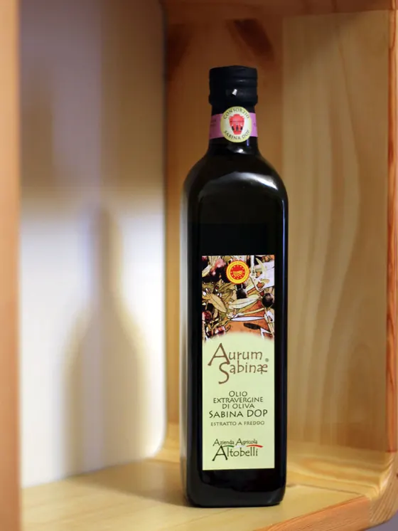
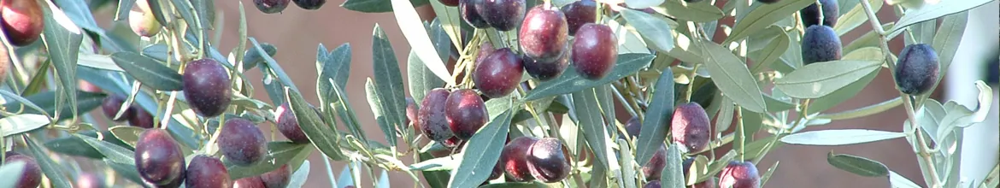
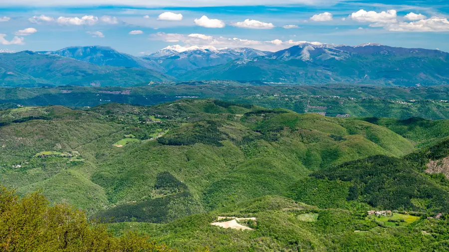
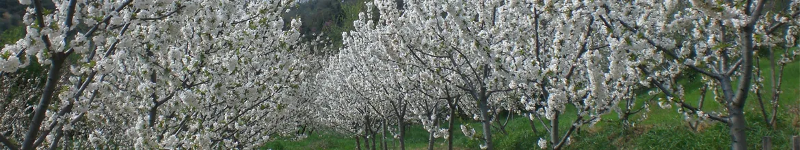
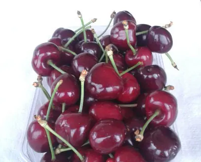
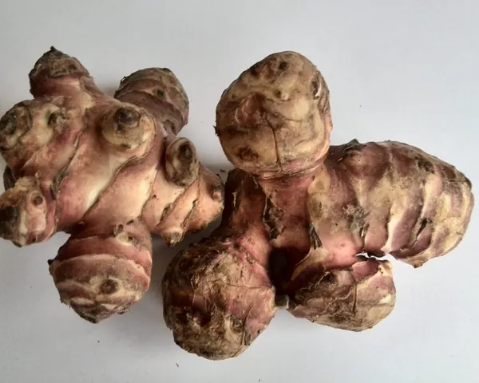

Slow Food, "Grande Olio"
Pepite d'Aurum Frantoio tra i Grandi Oli della guida Oli d'Italia, su 700 oli recensiti.
Olio extravergine Sabina DOP · Montelibretti (RM)
Raccolta precoce, spremitura immediata, conservazione senza ossigeno. Oli DOP, monocultivar e frutta di stagione dai nostri terreni di Montelibretti.


Come lavoriamo
Il nostro lavoro è preservare al meglio i biofenoli delle olive: sono loro a dare all'olio il suo amaro, il suo piccante e la sua freschezza.
Raccogliamo le olive presto, quando i profumi sono più vivi. Per il Primo Raccolto si comincia ancora prima.
Le olive vanno al frantoio subito dopo la raccolta, estratte a freddo, senza attese che ne spengano il gusto.
L'olio si conserva al riparo dall'aria, così arriva in bottiglia come è uscito dal frantoio.
Shop
Leccino, Carboncella, Frantoio e Salviana: le varietà della Sabina, raccolte tra ottobre e novembre.

Ottobre – novembre
Per chi aspetta da giorni la prima bruschetta dell'anno: olio freschissimo, torbido e denso, appena uscito dal frantoio.
Disponibile solo nelle settimane della raccolta, finché dura.
La famiglia Altobelli
In quegli anni mio nonno, tornato dalla Guerra, decise di rinunciare a un posto fisso che lo stato riservava ai reduci, per dedicarsi anima e corpo alla coltivazione dei terreni di famiglia. Leonardo Altobelli
Da allora l'azienda coltiva olio e frutta a Montelibretti, nella Sabina Romana. La stessa dedizione oggi serve a far conoscere l'olio sabino e i prodotti del nostro territorio per quello che sono: prodotti di alta qualità.

Riconoscimenti
Le giurie dei concorsi e le guide di settore hanno riconosciuto i nostri oli per più di dieci anni di fila.
Pepite d'Aurum Frantoio tra i Grandi Oli della guida Oli d'Italia, su 700 oli recensiti.
Tre olive nella guida Oli d'Italia per due edizioni consecutive.
Primo premio al Concorso Nazionale degli oli DOP di Sorrento, categoria fruttato leggero.

Frutta e orto
Accanto agli ulivi coltiviamo frutta e ortaggi di stagione, da sempre parte dell'azienda.

Le produciamo da oltre dieci anni, in una zona molto vocata. "Le cerase: una tira l'altra."

Tubero di origine nordamericana che si adatta bene alle nostre terre.
Un insieme di erbe selvatiche commestibili che crescono spontanee nei nostri campi.
Dove trovarci
Per visite e ritiro in azienda, chiamaci prima.
Apri in MapsIl nostro banco con ortaggi, frutta e prodotti dell'azienda.
Apri in MapsSpedizioni, gruppi d'acquisto e forniture: contattaci per quantità e tempi.
Vai allo shopContatti
Ordini, disponibilità del novello, visite in azienda: rispondiamo noi, senza intermediari.